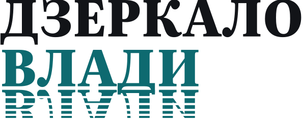

Про нас
Показуємо, що вирішують нагорі – і як це зачепить тебе
«Дзеркало влади» – незалежне медіа, яке стежить за рішеннями Київради, Верховної Ради, уряду й Офісу президента та пояснює їхні наслідки людською мовою.
Редакційна політика
Як ми працюємо
01
Факт окремо, думка окремо
Спершу що сталося, з джерелом. Наша оцінка – окремим блоком «Думка», завжди підписана.
02
Немає джерела – немає новини
Кожна цифра й цитата має посилання на документ, запис чи заяву. Анонімні «джерела» – тільки якщо редакція їх перевірила.
03
Однакова мірка для всіх
Критикуємо рішення будь-якої політичної сили за однаковими правилами. Без образ і переходу на особисте.
04
Помилки виправляємо відкрито
Якщо ми помилилися, виправляємо текст і пишемо під ним, що саме змінено і коли.
Контакти
Звʼязатися з нами
Реклама і партнерство
Рекламу позначаємо словом «Реклама». Політичну рекламу не публікуємо.
Telegram: @dzerkalo_vladyНайшвидше – у Telegram
Головне за день, термінові новини й пояснення – без шуму й анонімних «джерел».
Підписатися